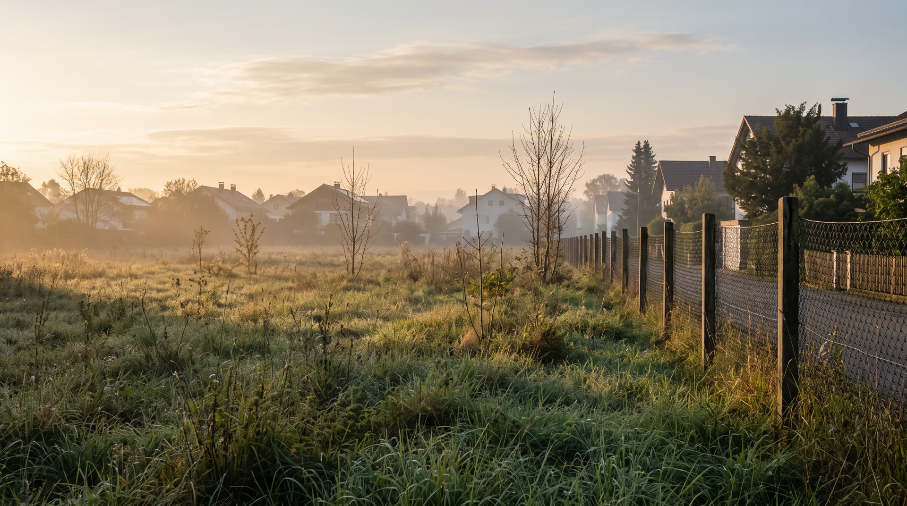
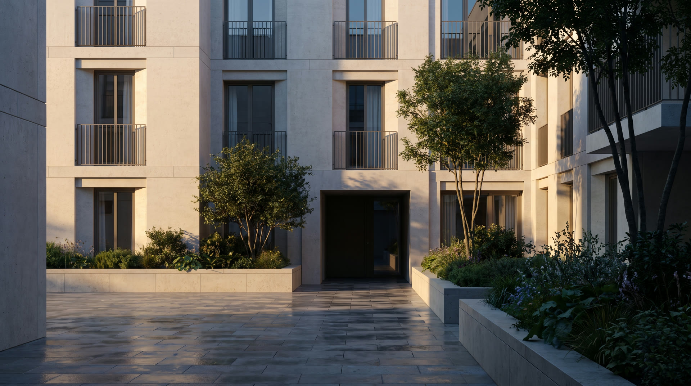

Ankauf
Wir kaufen mit und ohne Baurecht. Der Preis steht vor der Prüfung, nicht danach.
Zwei Familienunternehmen, seit 2007 gemeinsam. 250 Millionen Euro Projektvolumen.
Das Haus
2007 haben zwei Familienunternehmen in zweiter Generation ihre Arbeit zusammengelegt: die Krulich Immobiliengruppe und die Firmengruppe Opfergeld.
Seitdem entwickeln, bauen und halten wir Wohn- und Gewerbeimmobilien in München und Umland. Wir kaufen Grundstücke mit und ohne Baurecht, schaffen Baurecht selbst, bauen als Bauträger und verwalten den eigenen Bestand weiter.
Was wir zusagen, halten wir. Das ist der ganze Anspruch, und die Liste unten ist der Beleg dafür.
Arbeiten
Wo wir bauen
Einundzwanzig Objekte, jedes auf seiner echten Adresse. Siebzehn in München und Umland, dazu Nürnberg, Landshut und Chemnitz.
Stadt anklicken zoomt hinein. Dort führt ein Klick auf einen Punkt ins Archiv.
Deutschland Satellitenbild: Sentinel-2 cloudless von EOX IT Services GmbH, enthält bearbeitete Copernicus-Sentinel-Daten 2020, CC BY 4.0
Die Koordinaten stammen aus der Adresssuche von OpenStreetMap. Wo nur der Straßenname bekannt ist, sitzt der Punkt auf der Straße, nicht auf der Hausnummer.
Vom Grundstück zur Übergabe
Der häufigste Grund, warum ein Grundstücksverkauf platzt, ist nicht der Preis. Es ist die Zeit dazwischen. Diese drei Schritte gehen wir auf unser Risiko.

Wir kaufen mit und ohne Baurecht. Der Preis steht vor der Prüfung, nicht danach.
Die Baurechtsprüfung führen wir selbst. Sie warten nicht auf unsere Finanzierung.

Gebaut wird von uns, gehalten wird von uns. Über 1.000 Einheiten sind übergeben.
Halten, bis der Abschluss steht.
Ankaufsprofil
Wohn- und Gewerbeflächen in München und Umland, dazu Nürnberg, Landshut und Chemnitz. Grundstücke mit und ohne Baurecht. Bestandsobjekte zur Weiterentwicklung. Auch schwierige Lagen, auch mit Abbruch.
Fragen
Dann tragen wir das Risiko, nicht Sie. Wir kaufen auch ohne Baurecht und führen die Prüfung auf unsere Kosten.
Über 1.000 übergebene Einheiten seit 2007, und keine geplatzte Transaktion. Rücktrittsklauseln zu unseren Gunsten verhandeln wir nicht hinein.
Die Baurechtsprüfung dauert, je nach Gemeinde, Monate bis Jahre. Was wir Ihnen vorher sagen, gilt: der Preis und der Zeitpunkt Ihrer Zahlung.
Ja. Wir haben mehrfach mehrere Eigentümer gleichzeitig an einen Tisch gebracht. Sprechen Sie uns an, bevor Sie mit dem Nachbarn sprechen.
Kontakt
Munich Residential GmbH
Gewerbeallee 3
82343 Pöcking
08151 446 3120
info@munich-residential.com